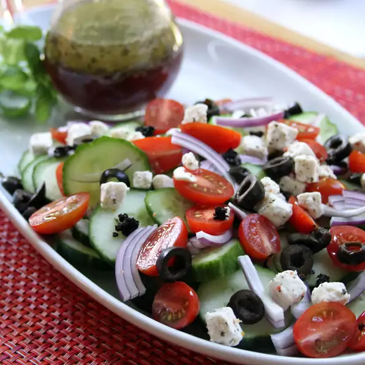

Mediterranean Greek Salad

Description
This is a great salad to take to a barbeque. All ingredients are approximate, so add more or
less of any ingredient depending on your own taste.
Ingredients
- 3 cucumbers, seeded and sliced
- 1½ cups crumbled feta cheese
- 1 cup black olives, pitted and sliced
- 3 cups diced roma tomatoes
- ⅓ cup diced oil packed sun-dried tomatoes, drained, oil reserved
- ½ red onion, sliced
Steps
- In a large salad bowl, toss together the cucumbers, feta cheese, olives,
roma tomatoes, sun-dried tomatoes, 2 tablespoons reserved sun-dried tomato oil,
and red onion. Chill until serving.